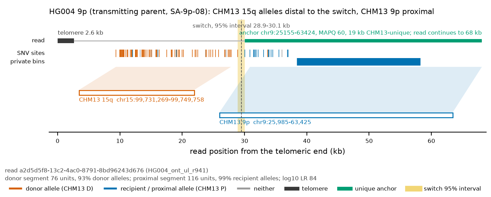
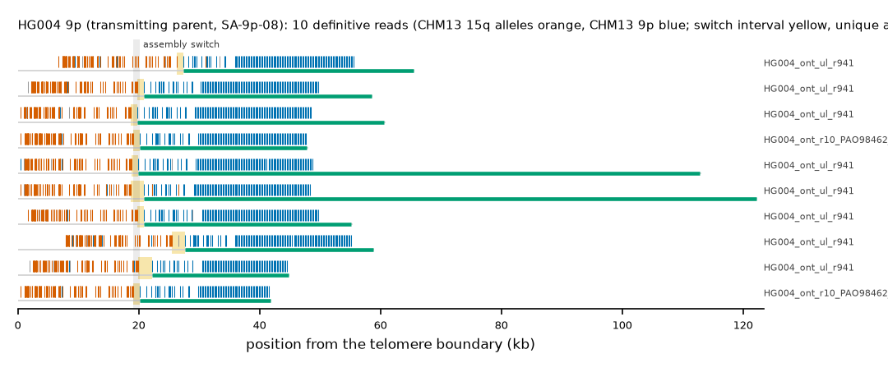

HG004 9p (transmitting_parent (HG002 maternal)): SA-9p-08
Claim HG004|HG002#2#chr9_MATERNAL#L. All claims
- cohort
- HG003/HG004 (trio)
- individual
- HG004
- haplotype
- transmitting_parent (HG002 maternal)
- arm
- 9p
- allele
- SA-9p-08 (foreign)
- model
- donor CHM13 15q, proximal CHM13 9p, recipient CHM13 9p, pattern DP
- claimed end(s)
HG002#2#chr9_MATERNAL#L- assembly switch
- 19,636 bp from the telomere boundary; on CHM13 chr9:23460; own-window projection 19080-20196 bp
- v1 verdict
- confirmed (transmitting_parent)
- definitive tier
- definitive (>= 2 datasets)
- reads
- 13 conclusive switch-concordant, 0 discordant, 0 contradicting, 18 consistent; 10 definitive (HG004_ont_r10_PAO98462_c3dbcd08,HG004_ont_ul_r941)
- by tier
- definitive:10;conclusive_shared_anchor:3;consistent:18
- source
- GIAB HG003/HG004 public long-read alignments (HiFi on CHM13 v2.0; ONT on GRCh38)


Conclusive and contradicting reads (13)
18 further reads are consistent (switch test passed, but no terminal telomere, anchor or integrity); they are
listed in reads.tsv.gz. Switch: 95% interval in subtelomere coordinates (kb from the
telomere boundary) and projected on CHM13 9p. Each samtools command prints the read's record
from its public file (CRAM: add the CHM13 v2.0 FASTA as -T).
| read | dataset | tier | length | switch (subtelomere, kb) | switch on CHM13 | donor units / purity | proximal units / purity | anchor (CHM13, MAPQ, unique) | own-assembly best end | fetch |
|---|---|---|---|---|---|---|---|---|---|---|
f9c67c9d-4c04-4a5c-b43e-5aa51a45d11e | HG004_ont_r10_PAO98462_c3dbcd08 | definitive | 49,603 | 19.1-20.2 | chr9:22903-24020 | 79 / 0.99 | 110 / 1.00 | chr9:24020-51680, 60, 7.6 kb | HG002#2#chr9_MATERNAL#L (99.2%) ✓ | samtoolssamtools view -F 0x900 -T GRCh38_no_alt_analysis_set.fa -X 'https://ont-open-data.s3.amazonaws.com/giab_2023.05/analysis/hg004/sup/PAO98462_c3dbcd08.pass.cram' 'https://ont-open-data.s3.amazonaws.com/giab_2023.05/analysis/hg004/sup/PAO98462_c3dbcd08.pass.cram.crai' 'chr9:10001-66459' | awk -v r='f9c67c9d-4c04-4a5c-b43e-5aa51a45d11e' '$1==r' |
9ec30631-03c6-403a-a52f-9dbfd9a9dff0 | HG004_ont_r10_PAO98462_c3dbcd08 | definitive | 51,628 | 19.1-20.2 | chr9:22906-24020 | 78 / 0.99 | 79 / 1.00 | chr9:24020-45597, 60, 1.5 kb | HG002#2#chr9_MATERNAL#L (99.3%) ✓ | samtoolssamtools view -F 0x900 -T GRCh38_no_alt_analysis_set.fa -X 'https://ont-open-data.s3.amazonaws.com/giab_2023.05/analysis/hg004/sup/PAO98462_c3dbcd08.pass.cram' 'https://ont-open-data.s3.amazonaws.com/giab_2023.05/analysis/hg004/sup/PAO98462_c3dbcd08.pass.cram.crai' 'chr9:10001-66459' | awk -v r='9ec30631-03c6-403a-a52f-9dbfd9a9dff0' '$1==r' |
c0d1e406-5bea-4e0c-86a2-04c7b37c4276 | HG004_ont_ul_r941 | definitive | 67,819 | 19.8-20.9 | chr9:22932-24020 | 74 / 0.99 | 117 / 1.00 | chr9:24020-62236, 60, 18.1 kb | HG002#2#chr9_MATERNAL#L (91.7%) ✓ | samtoolssamtools view -F 0x900 -X 'https://ftp-trace.ncbi.nlm.nih.gov/ReferenceSamples/giab/data/AshkenazimTrio/HG004_NA24143_mother/UCSC_Ultralong_OxfordNanopore_Promethion/HG004_GRCh38_ONT-UL_UCSC_20200508.bam' 'https://ftp-trace.ncbi.nlm.nih.gov/ReferenceSamples/giab/data/AshkenazimTrio/HG004_NA24143_mother/UCSC_Ultralong_OxfordNanopore_Promethion/HG004_GRCh38_ONT-UL_UCSC_20200508.bam.bai' 'chr9:10001-66459' | awk -v r='c0d1e406-5bea-4e0c-86a2-04c7b37c4276' '$1==r' |
e7856129-6c3a-405b-bb62-3df23e70aafd | HG004_ont_ul_r941 | definitive | 122,782 | 18.8-19.9 | chr9:22927-24020 | 73 / 0.97 | 115 / 1.00 | chr9:24020-118338, 60, 74.2 kb | HG002#2#chr9_MATERNAL#L (92.4%) ✓ | samtoolssamtools view -F 0x900 -X 'https://ftp-trace.ncbi.nlm.nih.gov/ReferenceSamples/giab/data/AshkenazimTrio/HG004_NA24143_mother/UCSC_Ultralong_OxfordNanopore_Promethion/HG004_GRCh38_ONT-UL_UCSC_20200508.bam' 'https://ftp-trace.ncbi.nlm.nih.gov/ReferenceSamples/giab/data/AshkenazimTrio/HG004_NA24143_mother/UCSC_Ultralong_OxfordNanopore_Promethion/HG004_GRCh38_ONT-UL_UCSC_20200508.bam.bai' 'chr9:10001-66459' | awk -v r='e7856129-6c3a-405b-bb62-3df23e70aafd' '$1==r' |
ae32ed45-2c53-4f9f-b365-493a4c82fb18 | HG004_ont_ul_r941 | definitive | 135,870 | 18.7-20.8 | chr9:22998-25155 | 72 / 0.99 | 116 / 0.98 | chr9:25158-128790, 60, 84.7 kb | HG002#2#chr9_MATERNAL#L (94.1%) ✓ | samtoolssamtools view -F 0x900 -X 'https://ftp-trace.ncbi.nlm.nih.gov/ReferenceSamples/giab/data/AshkenazimTrio/HG004_NA24143_mother/UCSC_Ultralong_OxfordNanopore_Promethion/HG004_GRCh38_ONT-UL_UCSC_20200508.bam' 'https://ftp-trace.ncbi.nlm.nih.gov/ReferenceSamples/giab/data/AshkenazimTrio/HG004_NA24143_mother/UCSC_Ultralong_OxfordNanopore_Promethion/HG004_GRCh38_ONT-UL_UCSC_20200508.bam.bai' 'chr9:10001-66459' | awk -v r='ae32ed45-2c53-4f9f-b365-493a4c82fb18' '$1==r' |
727b34d8-3167-40fa-8c86-9d855851e8e8 | HG004_ont_ul_r941 | definitive | 64,523 | 19.8-20.9 | chr9:22917-24020 | 73 / 0.96 | 115 / 1.00 | chr9:24020-58746, 60, 14.6 kb | HG002#2#chr9_MATERNAL#L (93.1%) ✓ | samtoolssamtools view -F 0x900 -X 'https://ftp-trace.ncbi.nlm.nih.gov/ReferenceSamples/giab/data/AshkenazimTrio/HG004_NA24143_mother/UCSC_Ultralong_OxfordNanopore_Promethion/HG004_GRCh38_ONT-UL_UCSC_20200508.bam' 'https://ftp-trace.ncbi.nlm.nih.gov/ReferenceSamples/giab/data/AshkenazimTrio/HG004_NA24143_mother/UCSC_Ultralong_OxfordNanopore_Promethion/HG004_GRCh38_ONT-UL_UCSC_20200508.bam.bai' 'chr9:10001-66459' | awk -v r='727b34d8-3167-40fa-8c86-9d855851e8e8' '$1==r' |
39c67b9b-4507-4891-9519-1731b30916f0 | HG004_ont_ul_r941 | definitive | 52,386 | 20.0-22.2 | chr9:22945-25155 | 73 / 0.96 | 88 / 1.00 | chr9:25155-48295, 60, 4.2 kb | HG002#2#chr9_MATERNAL#L (91.9%) ✓ | samtoolssamtools view -F 0x900 -X 'https://ftp-trace.ncbi.nlm.nih.gov/ReferenceSamples/giab/data/AshkenazimTrio/HG004_NA24143_mother/UCSC_Ultralong_OxfordNanopore_Promethion/HG004_GRCh38_ONT-UL_UCSC_20200508.bam' 'https://ftp-trace.ncbi.nlm.nih.gov/ReferenceSamples/giab/data/AshkenazimTrio/HG004_NA24143_mother/UCSC_Ultralong_OxfordNanopore_Promethion/HG004_GRCh38_ONT-UL_UCSC_20200508.bam.bai' 'chr9:10001-66459' | awk -v r='39c67b9b-4507-4891-9519-1731b30916f0' '$1==r' |
c244b1c8-f2dd-4d1b-abfe-214bab2e41a5 | HG004_ont_ul_r941 | definitive | 65,935 | 18.7-19.8 | chr9:22916-24020 | 72 / 0.97 | 117 / 1.00 | chr9:24020-65484, 60, 21.4 kb | HG002#2#chr9_MATERNAL#L (92.8%) ✓ | samtoolssamtools view -F 0x900 -X 'https://ftp-trace.ncbi.nlm.nih.gov/ReferenceSamples/giab/data/AshkenazimTrio/HG004_NA24143_mother/UCSC_Ultralong_OxfordNanopore_Promethion/HG004_GRCh38_ONT-UL_UCSC_20200508.bam' 'https://ftp-trace.ncbi.nlm.nih.gov/ReferenceSamples/giab/data/AshkenazimTrio/HG004_NA24143_mother/UCSC_Ultralong_OxfordNanopore_Promethion/HG004_GRCh38_ONT-UL_UCSC_20200508.bam.bai' 'chr9:10001-66459' | awk -v r='c244b1c8-f2dd-4d1b-abfe-214bab2e41a5' '$1==r' |
a2d5d5f8-13c2-4ac0-8791-8bd96243d676 | HG004_ont_ul_r941 | definitive | 68,116 | 26.3-27.4 | chr9:24032-25155 | 76 / 0.93 | 116 / 0.99 | chr9:25155-63424, 60, 19.3 kb | HG002#2#chr9_MATERNAL#L (91.0%) ✓ | samtoolssamtools view -F 0x900 -X 'https://ftp-trace.ncbi.nlm.nih.gov/ReferenceSamples/giab/data/AshkenazimTrio/HG004_NA24143_mother/UCSC_Ultralong_OxfordNanopore_Promethion/HG004_GRCh38_ONT-UL_UCSC_20200508.bam' 'https://ftp-trace.ncbi.nlm.nih.gov/ReferenceSamples/giab/data/AshkenazimTrio/HG004_NA24143_mother/UCSC_Ultralong_OxfordNanopore_Promethion/HG004_GRCh38_ONT-UL_UCSC_20200508.bam.bai' 'chr9:10001-66459' | awk -v r='a2d5d5f8-13c2-4ac0-8791-8bd96243d676' '$1==r' |
e66ae512-0e23-405f-a27c-408b74160b5b | HG004_ont_ul_r941 | definitive | 59,952 | 25.5-27.7 | chr9:22983-25155 | 73 / 0.93 | 115 / 1.00 | chr9:25155-57151, 60, 13.0 kb | HG002#2#chr9_MATERNAL#L (89.8%) ✓ | samtoolssamtools view -F 0x900 -X 'https://ftp-trace.ncbi.nlm.nih.gov/ReferenceSamples/giab/data/AshkenazimTrio/HG004_NA24143_mother/UCSC_Ultralong_OxfordNanopore_Promethion/HG004_GRCh38_ONT-UL_UCSC_20200508.bam' 'https://ftp-trace.ncbi.nlm.nih.gov/ReferenceSamples/giab/data/AshkenazimTrio/HG004_NA24143_mother/UCSC_Ultralong_OxfordNanopore_Promethion/HG004_GRCh38_ONT-UL_UCSC_20200508.bam.bai' 'chr9:10001-66459' | awk -v r='e66ae512-0e23-405f-a27c-408b74160b5b' '$1==r' |
0747050f-04c6-4c7a-8df3-21fd17a6e658 | HG004_ont_r10_PAO98462_c3dbcd08 | conclusive, shared anchor | 45,892 | 19.0-20.2 | chr9:22910-24020 | 78 / 0.99 | 52 / 1.00 | chr9:24020-40235, 60, 0.0 kb | HG002#2#chr9_MATERNAL#L (98.9%) ✓ | samtoolssamtools view -F 0x900 -T GRCh38_no_alt_analysis_set.fa -X 'https://ont-open-data.s3.amazonaws.com/giab_2023.05/analysis/hg004/sup/PAO98462_c3dbcd08.pass.cram' 'https://ont-open-data.s3.amazonaws.com/giab_2023.05/analysis/hg004/sup/PAO98462_c3dbcd08.pass.cram.crai' 'chr9:10001-66459' | awk -v r='0747050f-04c6-4c7a-8df3-21fd17a6e658' '$1==r' |
d0046b7a-b394-44de-863b-d94fac4c82c5 | HG004_ont_r10_PAO98633_064894cd | conclusive, shared anchor | 41,326 | 19.0-20.1 | chr9:22901-24020 | 78 / 0.99 | 34 / 1.00 | chr9:24020-36288, 60, 0.0 kb | HG002#2#chr9_MATERNAL#L (98.7%) ✓ | samtoolssamtools view -F 0x900 -T GRCh38_no_alt_analysis_set.fa -X 'https://ont-open-data.s3.amazonaws.com/giab_2023.05/analysis/hg004/sup/PAO98633_064894cd.pass.cram' 'https://ont-open-data.s3.amazonaws.com/giab_2023.05/analysis/hg004/sup/PAO98633_064894cd.pass.cram.crai' 'chr9:10001-66459' | awk -v r='d0046b7a-b394-44de-863b-d94fac4c82c5' '$1==r' |
65faa739-45cd-4c62-ad17-dfea82f5aa0d | HG004_ont_r10_PAO98633_162f2f43 | conclusive, shared anchor | 40,779 | 19.1-20.2 | chr9:22901-24020 | 80 / 0.99 | 26 / 1.00 | chr9:24020-34963, 60, 0.0 kb | HG002#2#chr9_MATERNAL#L (98.8%) ✓ | samtoolssamtools view -F 0x900 -T GRCh38_no_alt_analysis_set.fa -X 'https://ont-open-data.s3.amazonaws.com/giab_2023.05/analysis/hg004/sup/PAO98633_162f2f43.pass.cram' 'https://ont-open-data.s3.amazonaws.com/giab_2023.05/analysis/hg004/sup/PAO98633_162f2f43.pass.cram.crai' 'chr15:101922584-101981189' | awk -v r='65faa739-45cd-4c62-ad17-dfea82f5aa0d' '$1==r' |
Files and IGV
This is a showcase claim: its reads are in the repository under evidence/showcase/HG004__HG002_2_chr9_MATERNAL_L/ with IGV sessions CHM13 v2.0 (loci chr15:99720713-99753195 and chr9:1-126532) and own assembly, and a what-you-should-see note. Split at the switch, the distal segments of 6 of 6 showcase reads align to CHM13 15q and the proximal segments of 6 to CHM13 9p at MAPQ 60.
Re-derive this verdict
git clone https://github.com/jlanej/human-subtelomere-atlas && cd human-subtelomere-atlas
evidence/replicate_claim.sh 'HG004|HG002#2#chr9_MATERNAL#L'The script fetches the cited reads from the public source by region and read ID, re-runs the frozen criteria and compares every per-read and claim verdict with this page (details).